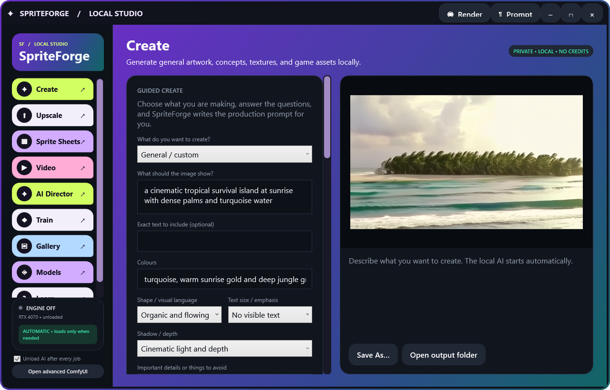
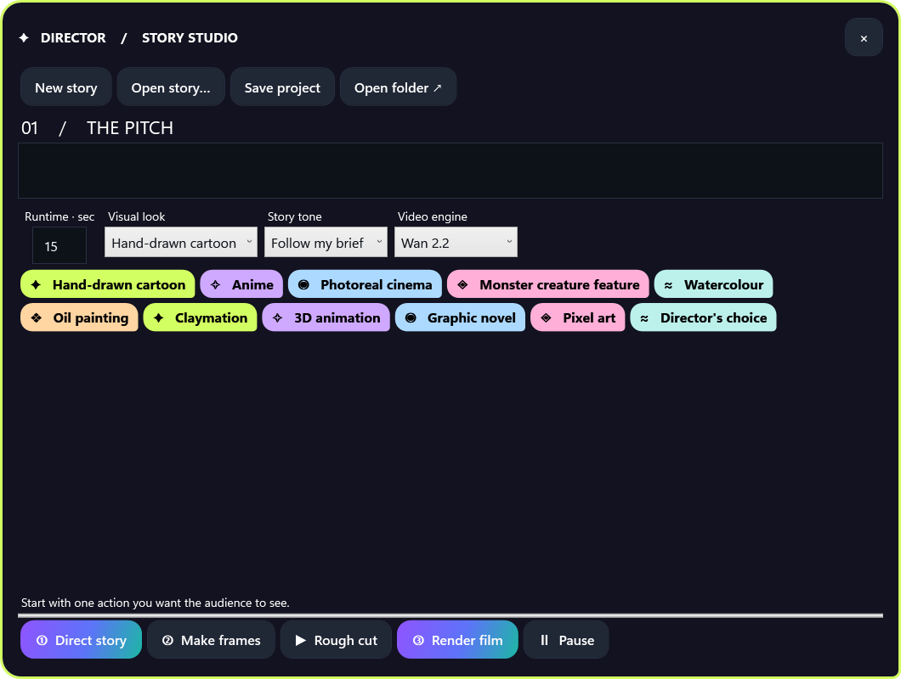
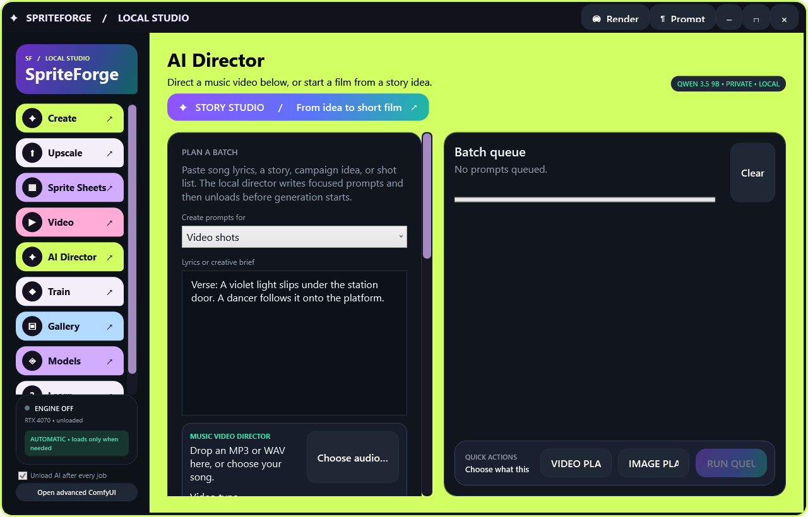
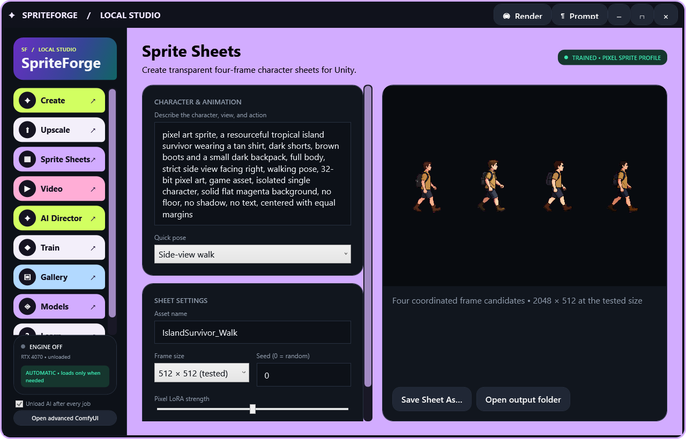

Write the idea.
Pick the runtime, look and tone. The local AI Director breaks the action into shots and writes a separate prompt for what you see and what moves.
“A dog walks down the street. A car comes around the corner. The dog stops.” Give SpriteForge fifteen seconds and a cartoon style. Watch the storyboard, change the reveal, then let your GPU animate the shots you approve.
Pick the runtime, look and tone. The local AI Director breaks the action into shots and writes a separate prompt for what you see and what moves.
Play the stills in sequence. Reveal the car a beat later. Pin a favourite frame as a visual reference, or try another take without losing the first.
Lock the frames you like. Your PC animates the approved shots and cuts them into an MP4. Pause at a checkpoint and pick up later.
Drop in a WAV or MP3. The song sets the length of the plan. Compare the local transcription with your own lyrics, edit the upcoming shots, and put timed words over the pictures instead of asking a video model to spell them.
Want a continuous camera move? Start the next shot from the last frame. Want a new scene on the chorus? Give it its own opening artwork. The final edit brings your original track back in.
Tour the workspaces below. Select a screenshot to inspect it at full size.




Design logos, posters, signage, UI mock-ups, textures or concept art with guided questions. Batch variations without retyping the brief.
Describe the pose and viewpoint, preview the sprite strip, then save the sheet. The training workspace lets you prepare your own style adapter from assets you have permission to use.
Mark generated images for upscaling or load one from disk. Choose 2× or 4×. Browse the output gallery by image or video, including work organised into subfolders.
Animate from text or an opening image. Queue variations, read the active prompt, follow render progress and resume saved story projects rather than starting from scratch.
Leave your name and email and Lockdown Studios will let you know when SpriteForge is available. No payment, no purchase commitment, and no instant download.
Change your mind? Email info@lockdownstudios.com to leave the list. Privacy information.Generation runs on your Windows PC with compatible GPU hardware and locally installed models. Allow space for model downloads and your footage. Rendering time depends on your GPU, model, resolution and clip length.
No. Story Studio takes a written idea and runtime. Use Music Video Director when you want the edits to follow an existing song.
Yes. Unlock the shot, change its scene or motion, compare frame versions and approve it again. Other approved Story Studio shots can stay as they are.
The screenshots show the current development build, not a guaranteed list of bundled models. Engine and training availability in the commercial edition will depend on hardware and licensing. Use music, references and training assets you have rights to use.